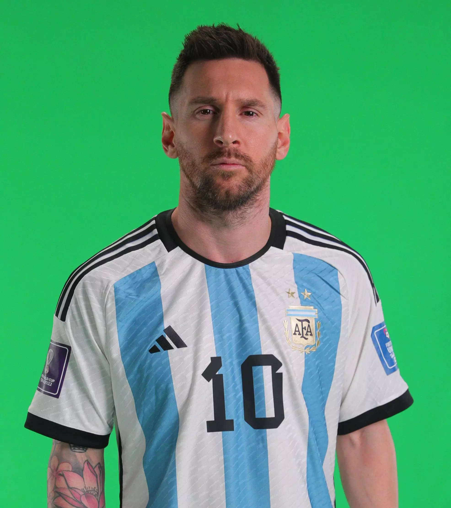

Lionel Andrés Messi Cuccittini (Rosario, 24 de junio de 1987), conocido como Leo Messi, es un futbolista argentino que juega como delantero o centrocampista. Desde 2023, integra el plantel del Inter Miami de la MLS estadounidense. Es también internacional con la selección de Argentina, de la que es capitán.
Considerado con frecuencia el mejor jugador del mundo y uno de los mejores de todos los tiempos, es el único futbolista en la historia que ha ganado, entre otras distinciones, ocho veces el Balón de Oro, siete premios de la FIFA al mejor jugador del mundo, seis Botas de Oro y dos Balones de Oro de la Copa Mundial de Fútbol. En 2020, se convirtió en el primer futbolista y el primer argentino en recibir un premio Laureus y fue incluido en el Dream Team del Balón de Oro.
